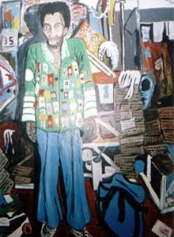

Jorge Furtado


Arte é o resultado da visão de mundo de um artista e da vontade consciente que este artista tem de compartilhar esta visão. "Arte requer comunhão", ensinou Stravinsky. Faz-se a partir de si, para outros. Maluco faz arte sem querer, para si mesmo, e isso não é arte, dizem.
Pois divirjo. Nada me convence que os malucos, por mais que tenham perdido canais de comunicação com o mundo, por mais que sofram - ou até por isso mesmo - deixem de querer compartilhar dores e alegrias. E por perceberem o mundo de forma tão particular, despida dos rigores da normalidade, malucos artistas acabam por nos revelar o avesso da vida.
Todo artista se equilibra na fronteira do normal, é meio fora da casinha, gasta tempo e energia escrevendo na areia. (Afinal, para que raios serve um soneto?) Para não falar dos meio-malucos - quase todos - lembro aqui de dois grandes artistas malucos brasileiros, Arthur Bispo do Rosário e Stela do Patrocínio, dois internos da Colônia Juliano Moreira, no Rio de Janeiro.

Bispo do Rosário - auto-retrato
Bispo do Rosário nasceu em Sergipe em 1909. Foi marinheiro e empregado doméstico até ser diagnosticado, em 1938, como esquizofrênico-paranóico, encaminhado à Colônia Juliano Moreira, onde viveu até sua morte, em 1989. Foi um dos maiores artistas plásticos brasileiros de todos os tempos.
O trabalho de Bispo do Rosário se utiliza, com refinado rigor estético, dos elementos disponíveis ao seu redor: madeira, plástico, latas, ferro, todo tipo de sucata, eventualmente tinta e, principalmente, tecido. Desfiando a velha roupa de cama do sanatório, Bispo bordava inacreditáveis mantos, estandartes, faixas e toalhas. Além de uma complexa iconografia onde predominam temas do cotidiano e referências à marinha (navios, código de bandeiras, rotas náuticas), Bispo bordava longos textos onde descrevia lembranças ou momentos do seu dia. O contraste entre a complexidade do meio (um texto bordado) e a aparente banalidade do tema ("atravessei a Voluntários da Pátria, dobrei a esquina da Riachuelo e vi um homem varrendo...") provocam um sentimento semelhante ao que temos ao contemplar a pintura de Michelangelo no teto da Capela Sistina ou as esculturas de Aleijadinho no Santuário de Bom Jesus de Matosinhos: uma súbita compreensão do poder da arte quando através dela se materializa a obsessão de um gênio.
A obra de Bispo do Rosário hoje é mundialmente conhecida, já correu o mundo e está preservada num museu que leva o seu nome. As melhores imagens que encontrei na rede estão no site da Fundação Proa, centro cultural argentino que recebeu uma exposição do Museu do Inconsciente. (clique na figura para vê-la ampliada)
Stela do Patrocínio é pouco conhecida, mesmo no Brasil, apesar de já ter virado filme, teatro e livro. Ela nasceu em 1941, provavelmente no Rio de Janeiro. Aos 21 anos foi internada pela primeira vez e aos 25 foi transferida para a Colônia Juliano Moreira, onde viveu até sua morte, em 1992. Stela foi diagnosticada como personalidade psicopática "mais esquizofrenia hebefrênica".
Sua fala poética impressionou a artista plástica Neli Gutmacher, responsável pelo ateliê da Colônia Juliano Moreira. Uma das estagiárias, Carla Guagliardi, guardou por 15 anos as fitas gravadas com Stela. Elas foram transcritas pela poeta Viviane Mosé e transformadas no livro "Reino dos bichos e dos animais é o meu nome", publicado pela Azougue Editorial, em 2001.
Stela era poeta? Ela não escrevia, falava, mas isso não prejudicou a carreira literária de Homero, Platão ou Cristo. Sua fala é poesia pura, repleta de dor e perplexidade, não se lê impunemente.
Bispo do Rosário e Stela do Patrocínio, dois dos maiores artistas brasileiros de todos os tempos, malucos, negros, pobres, talvez confirmem o que nos ensinou Riobaldo: "a gente só sabe bem aquilo que não entende".
**
A seguir, trechos do livro de Stela do Patrocínio, "Reino dos bichos e dos animais é o meu nome". Organização e apresentação de Viviane Mosé. Rio de Janeiro, Azougue editorial, 2001.
**
Comecei a existir com quinhentos milhões e quinhentos mil anos
Logo de uma vez, já velha
Eu não nasci criança, nasci já velha
Depois é que eu virei criança
**
Nasci louca
Meus pais queriam que eu fosse louca
Os normais tinham inveja de mim
Que era louca
**
Eu estou num asilo de velhos
Num hospital de tudo que é doença
Num hospício, lugar de maluco louco doido
**
Eu vim pra Colônia porque eu estava andando na Rua Voluntários da Pátria ao lado do Luís, com um óculos, vestido azul, sapato preto, com uma bolsa branca com um dinheirinho dentro, porque eu ia pegar um ônibus e descer na Central do Brasil, na Central do Brasil eu ia tomar uma refeição, ia tomar um ônibus na Central do Brasil que ia pra Copacabana, ia chegar em Copacabana, aí eu peguei o carro ainda na Rua Voluntários da Pátria com o Luís, ao lado do Luís, o Luís foi ao bar, eu estava ao lado do Luís, caminhando ao lado do Luís na Rua Voluntários da Pátria, caminhando na Rua Voluntários da Pátria ao lado do Luís, o Luís entrou no bar, sentou na cadeira, tocou na mesa, falou com o dono do bar pra aprontar pra ele uma Coca-Cola e um pão de sal com salsicha, ele tomou a refeição sozinho, não pagou pra mim, nem eu pedi, nem eu disse nada, nem tomei dele, nem eu pedi a ele pra pagar pra mim, aí ele tomou, quando ele acabou nós saímos, eu perdi o óculos, perdi o óculos, perdi o óculos que estava comigo, um óculos escuro, parecia que ele tinha me dado um bofetão na cara pra mim perder o óculos, o óculos pulou no chão, na Rua Voluntários da Pátria, eu caí por cima do óculos e o óculos e eu ficamos no chão, aí veio, aí veio uma velhinha, na porta do apartamento dela, me levantou, disse que não tinha sido nada, pra mim parar de ficar chorando, aí veio uma dona me botou pra dentro do Posto do Pronto Socorro perto da Praia de Botafogo, e lá, eu dentro do Pronto Socorro, ela me aplicou uma injeção, me deu um remédio, me fez um eletrochoque, me mandou tomar um banho de chuveiro, mandou procurar mesa, cadeira, cadeira, mesa, me deu uma bandeja com arroz, chuchu, carne, feijão, e aí chamou uma ambulância, uma ambulância assistência e disse: "carreguem ela", mas não disse pra onde, "carreguem ela",... ela achou que tinha o direito de me governar na hora, me viu sozinha, e Luís não tava mais na hora que o óculos caiu, eu não sei pra onde ele foi, porque eu fiquei, de repente, de repente, eu fiquei sozinha, ele sumiu de repente, desapareceu e não apareceu mais, mas aqui, depois que eu estou aqui, ele já veio aqui, já veio aqui, já foi embora, tornou a vir, tornou a ir embora, o Luís, o Luís é meu amigo, aí me trouxeram pra cá, mandou: "carreguem ela", deu ordem, "carreguem ela", na ambulância, "carreguem ela", carregaram, me trouxeram pra cá como indigente, sem família, vim pra cá, estou aqui como indigente, sem ter família nenhuma, morando no hospital, estou aqui como indigente, sem ter família nenhuma, morando no hospital, estou aqui como indigente, sem ter ninguém por mim, sem ter família e morando no hospital.
**
Onde achar o livro de Stela do Patrocínio.
Ilustração: Arthur Bispo do Rosário, "Auto-retrato". Acervo do Museu Bispo do Rosário, do Instituto Municipal Juliano Moreira (Estrada Rodrigues Caldas, 3.400, Jacarepaguá, RJ)